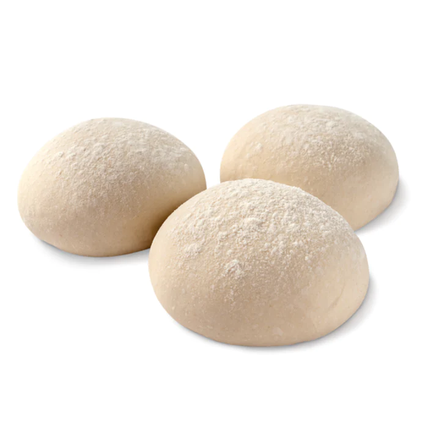

Pizza Dough!

Poolish Ingredienti:
- 300ml Water
- 300gr of 00 Flour
- 5gr of honey
- 5gr of dry yeast (10g if fresh yeast)
Making the poolish:
- Add room temperature water
- Add yeast to water
- Add honey and mix until yeast is melted in Water
- Add flour and mix
- Cover poolish container and keep at room temperature for an hour. Then refridgerate 16-24 hours
Pizza Dough Ingredienti:
- Premade poolish
- 700ml of water
- 40g of sea salt
- 1250gr of AP flour
Pizza Dough Method:
- Add poolish to water bowl
- Add half of the flour to bowl
- Add sea salt to the mixture
- Add the rest of the flour and keep mixing
- Once combined, dump dough on top of the counter and work with hands
- Once dough is worked through, cover it with the bowl and let it rest for 15 min
- With a little olive oil on the hands, work dough into a ball by lifting the middle and pulling it until the top is smooth and the dough is a puffy ball
- Put a little olive oil at the base of the bowl and place the dough ball inside
- Lighly seal bowl and let dough rest for 30 minutes
- After 30 minute rest, dump dough and make sure the top side is still up
- Gently tap with very small amount of olive oil and start seperating into individual balls
- Strech dough balls and fold inside on the bottom and pinch off when desired size is reached
- Dust resting pan with flour and lightly coat dough with olive oil. Wrap pan and rest at room temperature for two hours
This video by Vito Iacopelli was used for reference: https://www.youtube.com/watch?v=G-jPoROGHGE
Back to Homepage